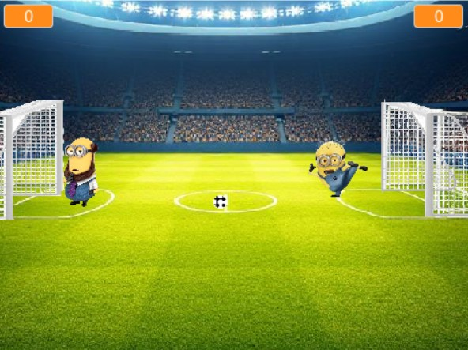
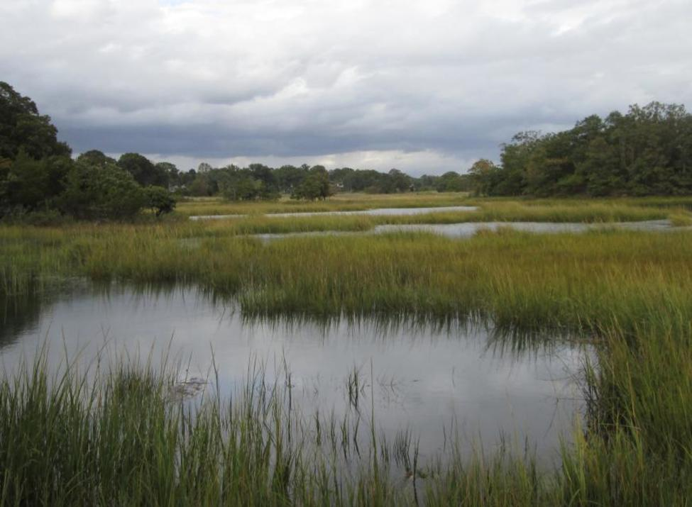
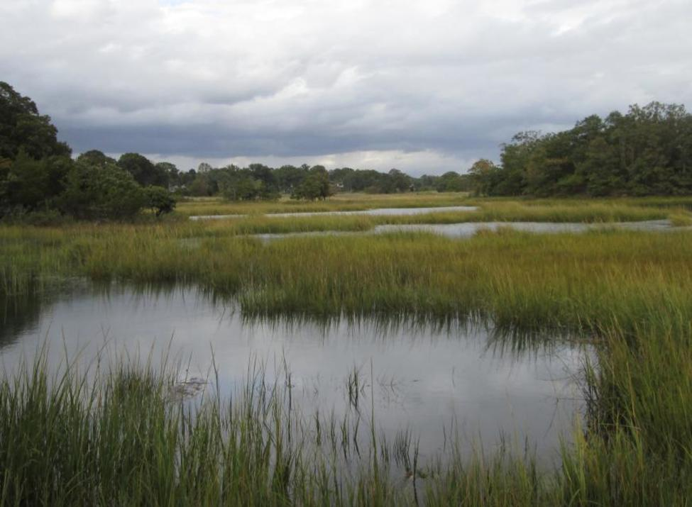

This is my Portfolio Page!
Project 1.1.9:Cava Bowl
In this project we used 12 different ingredients to incorporate in our bowl, the player can pick and choose what ingredients they want. We used turtles to organize and select ingredients by a list and inputting your selected choice and creating a loop as well as movement to place different ingredients to the bowl.
Project 1.2.5:Survive the AI
In this project we created a game in which consist of a player and a AI, similar to the game of tag Survive the AI is a game in which the player uses "wasd" to run away from AI from not being tagged. There are obstacles and power ups, if the AI catches the player the game is over, to win you must survive being chased for 25 seconds!
Project 1.3.1: I Spy E-Card
In this project we created an E-Card for a Children's Hospital this card consists of the game I Spy in which it greets them and it gives you questions to indentify the objects, it gives you a score and at the end theres a closing
Scratch Project: Minion Soccer game
In this game we created 2 players Kevin and Bob, to win the game one of the players must score up to 10 goals, there is sounds, costume changes, background changes and more that make the game fun!
Project 2.1.6: Fish Bowl

This Project was mostly based on security and internet safety, we created the Fish bowl to test these outcomes and to resolve issues in the software
Project 3.1.6: Rover Phone Home
 

The purpose of this project was to determine where the rover was located based off the information we were given on a spreadsheet. We drew out several charts and based off all our data, we came up with the conclusion that the rover was probably located in the Marshlands.We came to this conclusion because the temperature graph indicates a constant temperature as well as constant chirping and buzzing sounds that are shown on the sound graph. .
Project 4.1.4: Frogger

In this project we analyzed a simulation which was a recreation on the Frogger game which simulates real world scenarios, such as topics like cilmate change and real world model situations.